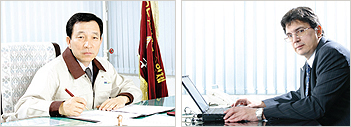

(株)平和法雷欧(VALEO)
- Home
- 投资优势
- 外商投资企业的成功事例
- (株)平和法雷欧(VALEO)
(株)平和法雷欧(VALEO)
公司介绍
(株)平和法雷欧是原地方“平和离合器(CLUTCH)工业(株)”和法国最大的汽车配件品牌—“法雷欧(VELEO)”公司合资并于1988年成立的，是生产汽车用离合器的专业企业。在世界汽车用离合器系统领域中，该公司的技术、品质与价格的竞争力都处于优势。它不仅向现代、起亚、通用大宇、双龙等国内组装车企业提供产品，而且还向日本的本田、铃木、三菱、尼桑，以及美国通用、福特等品牌提供货。占国内汽车离合器市场的80%，并向世界70多个国家出口产品。
一般现况
- 投资国/投资企业：法国；法雷欧
- 成立年度：1988年
- 法人代表：金相太/ Eric Balivet 共同法人
- 员工人数：700名
- 主要产品：汽车用板离合器、离合器盖、 离合器分离轴承等
- 地址：大邱广域市 达西区 厂东 306-70号
发展历史
- 1988年10月：成立(株)平和法雷欧/平和离合器工业(株)和法雷欧公司合资
- 1995年12月：获得ISO 9001认证/德国 TUV+KMA
- 1999年07月：被授予“外商投资企业奖”(KOTRA)--产业支援部(现知识经济部)制定
- 2003年01月：获得ISO 14001 认证/SGS ICS
- 2004年06月：获得ISO/T16949[2版 BVQI]认证
竞争力与前景
被称为“优秀制造技术研究中心”的平和法雷欧公司的研究所正全面开发着革新技术。尤其是最近开发的国内最早的SAT、CSC等新产品正被使用于国内所有汽车品牌中。另外，它具备广大范围的产品群，因此确保了在保质维修(A/S)市场上的竞争优势。